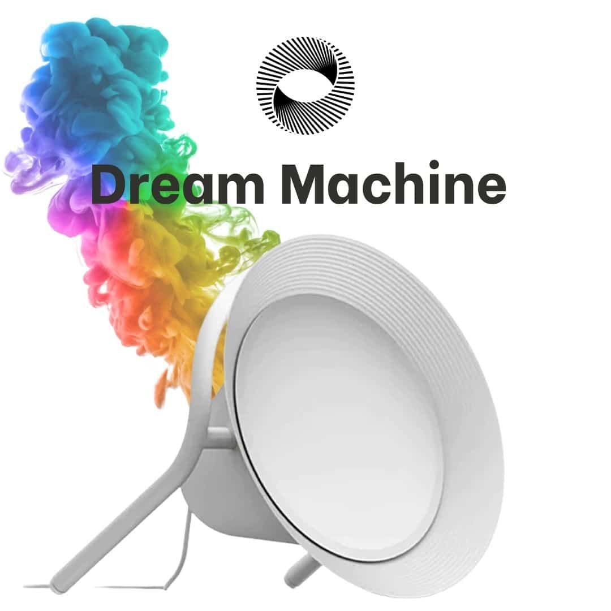

Exploration et expression
La Dream Machine vous permet d'explorer vos pensées, vos émotions et vos expériences d'une manière visuelle et symbolique. Elle vous aide à exprimer ce qui est difficile à mettre en mots.
Photostimulation
Cet outil innovant combine des technologies avancées avec une approche personnalisée afin d'enrichir votre expérience et de vous accompagner dans l'atteinte de vos objectifs.
La Dream Machine est un programme interactif utilisant la photostimulation pour générer des séquences visuelles adaptées à vos besoins et à vos objectifs personnels.
Ces expériences visuelles sont conçues pour favoriser la relaxation, encourager l'introspection et soutenir un travail personnel ou thérapeutique.
Les visualisations proposées peuvent solliciter différents réseaux cognitifs associés, notamment les processus liés à la mémoire, aux émotions et à la pensée conceptuelle.

Vidéo
Une vidéo de présentation pour découvrir le principe de cet outil.
Accompagnement
La Dream Machine vous permet d'explorer vos pensées, vos émotions et vos expériences d'une manière visuelle et symbolique. Elle vous aide à exprimer ce qui est difficile à mettre en mots.
Les séances incluent des exercices de relaxation et de respiration guidée, aidant à réduire le stress et l'anxiété tout en favorisant un état d'esprit calme et centré.
Chaque session est unique et adaptée à vos besoins spécifiques. Nous travaillons ensemble pour définir les objectifs et les thèmes à explorer lors de nos séances.